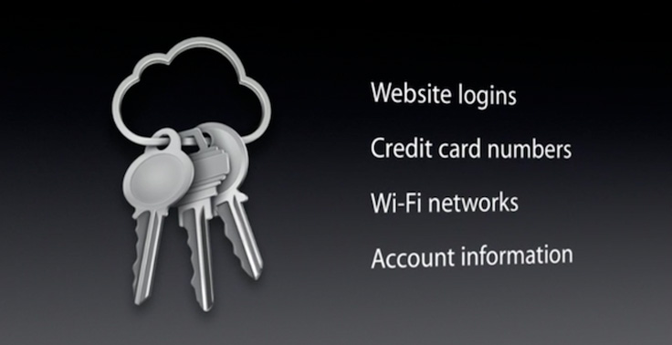

Дата публикации: 11.06.2014
В iOS 7.0.3 и OS X Mavericks появился новый сервис Apple – KeyChain (Связка ключей), который позволяет пользователям хранить пароли и данные кредитных карт, синхронизируя все данные между различными устройствами с помощью iCloud. Сервис также включает в себя генератор паролей, который поможет пользователям создавать более безопасные и надежные пароли.
iCloud KeyChain является частью iOS 7 и OS X 10.9, хотя в первых версиях iOS 7 данная функция отсутствовала, но с выходом OS X 10.9 ее добавили с помощью бесплатного обновления операционной системы. Так как сервис является полностью бесплатным, он составляет серьезную конкуренцию LastPass и 1Password.
Как настроить iCloud KeyChain

После установки OS X Mavericks на ваш Mac вам будет предложено настроить iCloud KeyChain. Также это может быть сделано позднее в «Системных настройках» – «iCloud». При первой настройке потребуется ввести пароль от учетной записи iCloud, затем создать четырехзначный ключ безопасности, который будет запрашиваться при добавлении настройки на новых устройствах. Здесь же потребуется привязать номер телефона, на который будут приходить SMS-сообщения при восстановлении доступа к iCloud Keychain.